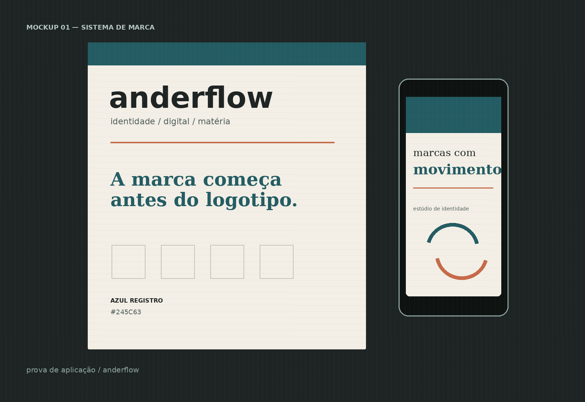
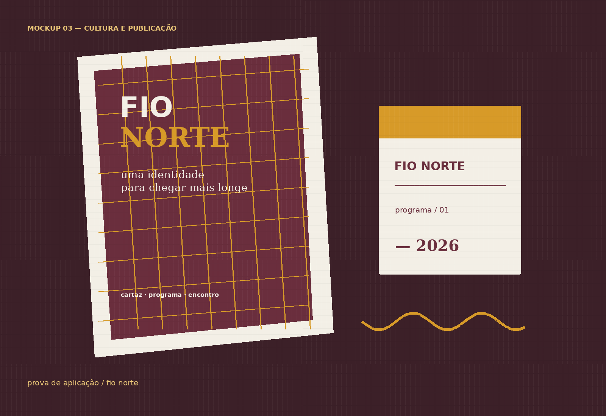

Anderson Honorato · identidade visual
Marcas que
parecem
com o que
entregam.
Eu transformo o que um negócio já faz bem em uma identidade que o cliente reconhece, entende e quer escolher.
Conhecer os projetos ↓
Logo é o começo.
O sistema é o valor.
Uma identidade precisa funcionar no momento em que alguém encontra a sua marca: na tela, na proposta, no produto ou no cartaz. Aqui você vê o contexto, a decisão e os formatos — não só a cor.
“Você aprova vendo funcionar.”
Projetos selecionados
Escolha um ponto
de partida.
Três direções, três necessidades. Em comum, um trabalho que começa pelo negócio e termina em arquivos que você consegue usar.
Estúdio de identidade e presença digital
Anderflow
Sua marca com a mesma clareza que você coloca no trabalho. 02
02Produto botânico e pequenos lotes
Seiva
O cuidado que existe no produto também aparece na embalagem.
03Cultura, eventos e publicação
Fio Norte
Uma identidade que ajuda o público a encontrar o próximo encontro.Menos improviso.
Mais direção.
Posicionamento, identidade e presença digital trabalham juntos para a sua marca parecer tão cuidadosa quanto o que você entrega.
Próximo movimento
Tem uma marca
pedindo forma?
Me conte o que você está construindo. Eu respondo com um próximo passo claro.
Falar comigo ↗honoratoann@gmail.com · São Paulo